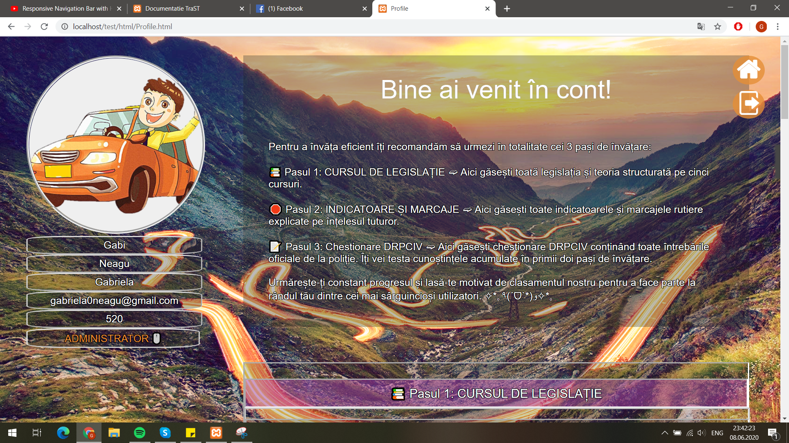

Ghid de utilizare a aplicatiei TraST
1. Abstract
In acest document vom vorbi despre metodele de utilizare ale aplicatiei TraST, atat din ipostaza de utilizator cat si de administrator.
2. Introducere
TraST este un produs software care ofera indrumare pentru dobandirea permisului de conducere, concentrandu-se pe partea teoretica. Utilizatorii care acceseaza aceasta aplicatie beneficiaza de cele mai noi informatii ce tin de legislatia rutiera, precum si de o testare a informatiilor asimilate pe parcurs, aceasta realizandu-se prin completarea chestionarelor puse la dispozitie.
Aplicatia noastra sta la dispozitia utilizatorilor ce detin un cont, cat si acelor neautentificati. De asemenea se poate interactiona cu aplicatia si din ipostaza de administrator.
3. Pagina Principala
Pagina principala vine in intampinarea utilizatorilor cu o interfata prietenoasa si intuitiva. Meniul infatisat de un buton clasic afiseaza la hover cinci destinatii in partea centrala a ecranului . Fiecare destinatie este reprezentata de o poza sugestiva. Cand o pictograma de navigare este apasata, utilizatorul este dus la destinatia de navigare asociata pictogramei respective.
In coltul din dreapta al paginii sunt amplasate 1/2 butoane dinamice in functie de statutul persoanei ce utilizeaza aplicatia ( daca este logat sunt prezente butoanele de Delogare si Profil, altfel doar cel ce permite Autentificarea sau Logarea)
Butonul de Autentificare/Logare , singurul buton vizibl pentru utilizatori nelogati face trimitere la pagina de Logare.
4.Pagina de Logare
Pagina de Logare presupune completarea unui formular cu datele aferente fiecarui utilizator ( username, parola ), iar in cazul in care se doreste crerea unui nou cont este pus la dispozitie un buton cu textul " Vrei sa iti creezi cont?" care face legatura cu pagina de Inregistrare.
5.Pagina de Inregistrare
Pagina de Inregistrare implica la randul sau completarea unor date generale precum: nume, prenume , email , username si parola. Crearea cu succes a contului necesita completarea tuturor campurilor. Intoarcerea in pagina de Logare se poate realiza apasand butonul avand textul "Ai deja un cont?".
In cazul ambelor pagini (Logare, Inregistrare) intoarcerea la pagina principala este realizabila prin apasarea butonului aflat in coltul din drapta sus, ce infatiseaza o casuta.
Butonul de delogare Se gaseste pe majoritatea paginilor din aplicatie, iar prin apasarea acestuia, utilizatorul autentificat paraseste contul si este directionat catre pagina de Logare.

Butonul catre profilul utilizatorului se afla sub butonul de delogare si poate fi accesat doar de catre utilizatorii autentificati si face trimitere la profilul aferent.
6.Pagina de Profil
Pagina de Profil acesibila doar in cazul utilizatorilor logati ofera o descriere a continutului paginilor. Sub sectiunea descriptiva se regaseste
o perspectiva asupra parcursului utilizatorului in cadrul aplicatiei TraST( cei trei pasi). Sectiunea dedicata studiului legislatiei este impartita in cursuri, respectiv capitole, vizitarea acestora crescand progresul. Intr o maniera asemanatoare partea a doua este impartita in indicatoare si marcaje, a caror vizitare creste progresul. In ceea ce priveste ultimul pas, profilul ofera o vizune de ansamblu asupra tuturor chestionarelor rezolvate. Se ia in considerare doar punctajul obtinut la prima finalizare a acestora.
In partea stanga se pot vizualiza date generale despre utilizator (username,nume , preunume , adresa de email, scor total si in cazul administratorilor un buton de trecere la contul aferent) insotite de o poza generica.

Sunt prezente butoanele de Delogare, respectiv Acasa, reamintite mai sus.
Butonul Top acesta faciliteaza intoarcerea in partea superioara a paginii, fara ca utilizatorul sa fie nevoit sa dea scroll up.
7.Pagina de Categorii
Pagina de Categorii aceasta vine in ajutorul utilizatorului cu o prezentare generala a categoriilor de permis. Butonul de Acasa si cel de Delogare sunt prezente de asemenea.
8.Pagina Cursuri Legislatie
Pagina Cursuri Legislatie Aceasta face introducerea cursurilor principale abordate in legislatia rutiera, in numar de patru: mecanica, prim-ajutor, conducere ecologica si conduita preventiva. In partea superioara a paginii este situat un nou meniu. Acesta afiseaza sase destinatii, fiecare destinatie este reprezentata de o eticheta text. Cand o pictograma de navigare este apasata, utilizatorul este dus la destinatia de navigare asociata pictogramei respective.
Cele 4 cursuri reprezentate sub forma de card, afiseaza la hover continutul,pe scurt, al cursului si invita utilizatorul sa descopere mai mult prin apasarea butonului Citeste mai mult .. care directioneaza spre capitolele aferente.
9.Pagina Capitole
Pagina Capitole prezinta in partea de sus acelasi meniu intalnit in pagina anterioara. In partea stanga se poate vizualiza un curins, care faciliteaza legatura cu celelalte cursuri. In partea dreapta apare o succinta descriere a cursului, urmata de cate un card pentru fiecare capitol care la randul sau la hover afiseaza titlul capitolului si butonul pentru aprofundare Citeste mai mult ... Acesta directioneaza catre o pagina de tip sablon cu informatiile specifice.
Se observa prezenta butonului Top avand aceiasi functionalitate prezentata mai sus.

10.Pagina Capitol
Pagina Capitol avand acelasi layout ca pagina prezentata anterior, aduce ca element de noutate o galerie de imagini, insotite de o descriere.
Fiecare curs vine cu acelasi format (Pagina Curs, Pagina Capitole , Pagina Capitol) utilizatorul reusind sa navigheze cu usurinta, fiind familiarizat cu acesta.
11.Pagina Chestionare DRPCIV
Pagina Chestionare DRPCIV, pastreaza unitatea vizuala folosind acelasi meniu in partea superioara, acesta fiind urmat de o scurta sectiune informativa cu privire la modul de rezolvare si notare a chestionarelor.
Fiecare categorie are alocat un numar de 6 chestionare ce pot fi rezolvate prin apasarea butonului Rezolva care directioneaza utilizatorul catre Pagina Chestionarului.
12.Pagina Chestionarului
Pagina Chestionarului se prezinta initial avand un design simplu, cu un sigur buton Start care la click afiseaza prima intrebare alaturi de cele 3 variante de raspuns. La selctarea unui raspuns, varinata corecta se coloreaza cu verde, iar cele gresite cu rosu si apare butonul Next care la click afiseaza urmatoarea intrebare.
La finalizarea chestionarului utilizatorului ii este comunicat punctajul obtinut, avand posibilitatea sa se intoarca la pagina de chestionare prin apasarea butonului Exit .
13.Pagina Indicatoare si Marcaje
Pagina Indicatoare si Marcaje pune la dispozitie meniul amintit anterior sub care se gasesc principalele categorii de Indicatoare si Marcaje in format card, care la hover prezinta un buton vezi explicatia aici ce directioneaza spre pagina cu indicatoare/marcaje selectate. Prezenta butonului Top adauga aceiasi functionalitate regasita in paragrafele anterioare.
14.Pagina Continut Indicatoare/Marcaje
Pagina Continut Indicatoare/Marcaje avand acelasi layout ca pagina Indicatoare si Marcaje, face trimitere prin butonul Vezi explicatia aici catre o pagina sablon cu detalii despre elementul selectat.
15.Pagina Indicator/Marcaj
Pagina Indicator/Marcaj ilustreaza un design minimalist, fiind alcatuit din poza aferenta ,titlul si o descriere a acestuia.
16.Pagina Clasament
Pagina Clasament se regaseste in partea de sus titlul aplicatiei urmat de subtitlu, alaturi de care se afla butonul prin care poate accesa datele ca flux RSS.
Ierarhia utilizatorilor bazata pe scorul total obtinut din chestionare, conform bazei de date este redata in tabela din centrul paginii. Fiecare utilizator logat se va gasi cu usurinta in tabela, fiind marcat cu culoarea portocalie.
Pastrand acelasi tipar, butoanele Acasa si Delogare sunt prezente in cadrul paginii.
17.Pagina Administrator
Pagina Administrator fiind construita pe acelasi principiu cu Pagina de Profil, aceasta poate fi accesata prin apasarea butonului prezent doar in cadrul profilului decorat cu calitatea de Administrator TraST.
In partea stanga se poate observa layoutul din pagina de profil, singura diferenta fiind inlocuirea scorului cu butonul PROFIL acesta facand trecerea la contul normal.
In partea dreapta sunt prezentate avantajele pe care le dobandeste utilizatorul odata cu drepturile de administrator.
In ceea ce priveste utilizatorii se pot efectua:
Butonul Anulează/Oferă drepturi utilizatorilor face trimitere la o pagina nou, care editeaza direct in baza de date, oferind posibilitatea administratorului de a oferi aceleasi drepturi si altor utilizatori. In cazul utilizatorului logat ca si administrator in momentul accesarii paginii butonul Sterge admin din dreptul sau este blocat (inactiv).
Butonul Șterge conturile utilizatorilor nedoriți permite stergerea oricarui utilizator direct din baza de date. Similar cu situatia precedenta,butonul Sterge al utilizatorului logat este inactiv.
In ceea ce priveste chestionarele auto se pot realiza:
Butonul Inserează/Șterge/Modifică întrebările din chestionare face trimitere catre un tabel in care se afla informatiile referitoare la intrebarile ce se regasesc in chestionare. Orice modificare realizata in acest tabel se va face automat si in baza de date.
Butonul Adauga la randul sau trimite catre un formular in care sunt administratorul poate introduce orice intrebare, urmarind formatul respectiv.Toate fieldurile fiind obligatorii.Finalizarea procesului se realizeaza prin apasarea butonului Incarca intrebarea.
Butonul Editeaza duce catre un formular similar, completat de aceasta data cu informatiile intrebarii selectate spre a fi modificate.
Updatarea intrebarii se finalizeaza cu apasarea butonului aflat sub formular Editeaza intrebarea.
Butonul Sterge efectueaza stergerea intrebarii selectate din baza de date.
Cele trei butoane Anulează/Oferă drepturi utilizatorilor ,Șterge conturile utilizatorilor nedoriți,Inserează/Șterge/Modifică conduc la pagini in care sunt prezente butoanele de Acasa si Delogare.